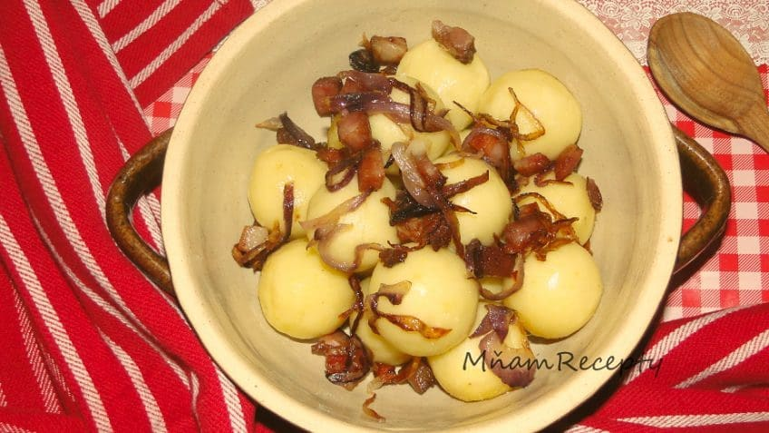

Džatky podľa @mnam_recepty — Normy Jedál
Džatky so slaninkou a cibuľkou
#obed #zemiaky #slanina #lacnejedlo #spisskedzatky #tradicnerecepty #tradicnakuchyna #dnesjem #instafood #yummy #tasty #delicious #dnesjim #food #dnesvarim #comamdnesvarit #comamvarit #mnamky #mnamka #varenie #mnamrecepty #vkuchyni #jidlo #jidlojelaska #jedlo #jednoducherecepty #radvarim #varenijeradost #dzatky #slovakfood
Link in BIO